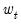
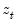
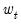
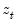

To estimate an equation using Two-stage Least Squares, open the equation specification box by choosing or Choose
TSLS from the
Method: dropdown menu and the dialog will change to include an edit window where you will list the instruments.
Alternately, type the tsls keyword in the command window and hit ENTER.
In the edit box, specify your dependent variable and independent variables and enter a list of instruments in the edit box.
To specify the use of White heteroskedasticity robust standard errors, we will select in the dropdown menu on the tab. By default, EViews will estimate the using the method with as specified in
Equation (23.3).
The summary statistics reported at the bottom of the table are computed using the formulae outlined in “Summary Statistics”. Bear in mind that all reported statistics are only asymptotically valid. For a discussion of the finite sample properties of TSLS, see Johnston and DiNardo (1997, p. 355–358) or Davidson and MacKinnon (1993, p. 221–224).
EViews uses the structural residuals in calculating the summary statistics. For example, the default estimator of the standard error of the regression used in the covariance calculation is:
These structural, or regression, residuals should be distinguished from the second stage residuals that you would obtain from the second stage regression if you actually computed the two-stage least squares estimates in two separate stages. The second stage residuals are given by , where the

and are the fitted values from the first-stage regressions.
The Options button in the estimation box may be used to change the iteration limit and convergence criterion for the nonlinear instrumental variables procedure.
EViews estimates the model as a nonlinear regression model so that Fair’s warning does not apply. Estimation of the model does, however, require specification of additional instruments to satisfy the instrument order condition for the transformed specification. By default, the first-stage instruments employed in TSLS are formed as if one were running Cochrane-Orcutt using Fair’s prescription. Thus, if you omit the lagged left- and right-hand side terms from the instrument list, EViews will, by default, automatically add the lagged terms as instruments. This addition will be noted in your output.


 be the matrix of instruments, and let
be the matrix of instruments, and let  and
and  be the dependent and explanatory variables. The linear TSLS objective function is given by:
be the dependent and explanatory variables. The linear TSLS objective function is given by: is the estimated residual variance (square of the standard error of the regression). If desired,
is the estimated residual variance (square of the standard error of the regression). If desired,  may be replaced by the non-d.f. corrected estimator. Note also that EViews offers both White and HAC covariance matrix options for two-stage least squares.
may be replaced by the non-d.f. corrected estimator. Note also that EViews offers both White and HAC covariance matrix options for two-stage least squares. for TSLS can be negative even when there is a constant in the equation.
for TSLS can be negative even when there is a constant in the equation. is a vector of endogenous variables, and  is a vector of predetermined variables, which, in this context, may include lags of the dependent variable. is a vector of instrumental variables not in
is a vector of endogenous variables, and  is a vector of predetermined variables, which, in this context, may include lags of the dependent variable. is a vector of instrumental variables not in  that is large enough to identify the parameters of the model.
that is large enough to identify the parameters of the model.